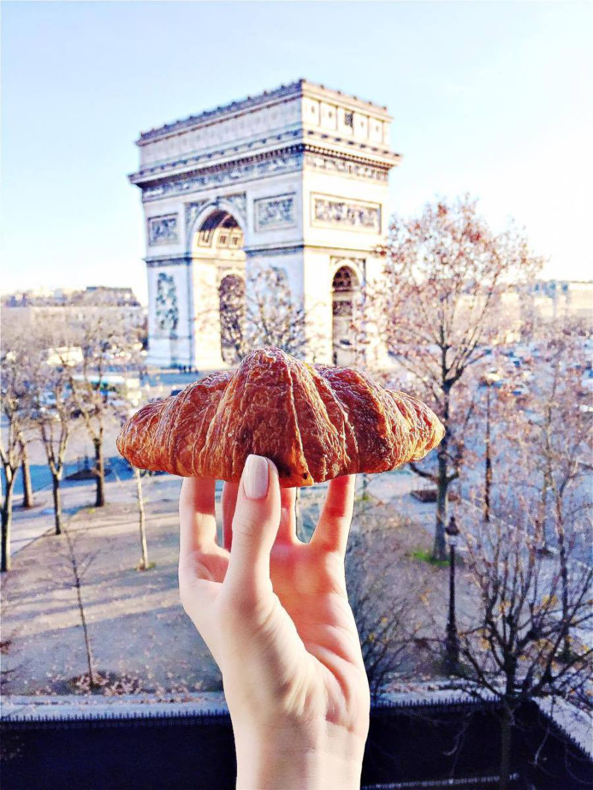

Allison Grekin
Student @ LE WAGON
"Born and raised in Paris, half French half American. I studied and worked in the US and recently settled down in London a year ago to create my own start-up called Seeze and grow my blog @thesassypair."
"Born and raised in Paris, half French half American. I studied and worked in the US and recently settled down in London a year ago to create my own start-up called Seeze and grow my blog @thesassypair."
South African Roadtrip!Hello Guys! Happy New Year to YOU ALL!!! We thought that sharing with you our trip to South Africa could be a great way to start the year! It’s been a few years now that South Africa is on our travel bucket list. Who can pass on such incredible views and wildlife? Well, definitely not us! A lot of people told us that December/Nye’s was the absolute best time of the year to go to this part of the world. Point taken, the weather was amazing and the crowd was just a melting pot of locals and foreigners. Can you name anything better than having the best of both worlds when you’re traveling? READ MORE! |
Moroccan Getaway, A Full List of Things To Do!Hey guys! Soooo we hope that some of you are in need of some amazing pics because we have them for you! We decided to plan a weekend getaway in Marrakech, Morocco and discover the amazing places and architecture of it! We stayed at the Es Saadi Palace which is in all honesty the best of the best! The service is particularly flawless! For those who plan on going there anytime soon, please take a closer look at our list of restaurants: 1 – LA PAUSE: lunch at the doors of the desert of Agafay. 30mins away from Marrakech. Book with (Sophie) : lapause1@gmail.com 2 – LE RELAIS DU LAC : Restaurant of the Lalla Takerkoust. Order the chicken with olives; it’s a must! READ MORE! |
|  |
Paris, I Love You…♥♥♥Hello guys! You’ve probably noticed that we have been posting a LOT about Paris recently. Can you blame us?! Paris just puts a HUGE smile on our faces every time that we go back. Ironic for two people who decided to leave this city to conquer London, isn’t it? Before leaving Paris, neither of us were really realizing how gorgeous this city was! Check out our pics and recommendations! Who would you want to go with to this wonderful City of Love? Let us know! READ MORE! |